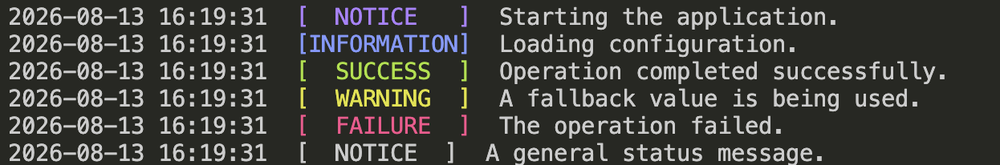
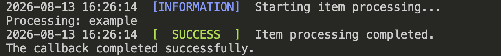

PTColors.jl
Readable Julia terminal output
PTColors provides lightweight, color-coded, timestamped messages for command-line applications, scripts, simulations, and automated workflows.
PTColors makes terminal messages easier to identify without requiring users to work directly with ANSI escape codes. It provides standard functions, convenience macros, timestamp formatting, and callback status handling.
Why PTColors?
- Consistent timestamps and status labels
- Information, success, warning, failure, and header messages
- Convenient macros for common message types
- Callback execution with success and failure handling
- No external runtime dependencies
- Support for Julia 1.11 and later
Installation
Install PTColors from Julia’s General registry:
using Pkg
Pkg.add("PTColors")Quick start
Load the package:
using PTColorsPrint status messages:
headermsg("Starting the application.")
infomsg("Loading configuration.")
okmsg("Operation completed successfully.")
warnmsg("A fallback value is being used.")
failmsg("The operation failed.")
defaultmsg("A general status message.")Each message includes a timestamp and status label. The predefined message functions color their labels, while defaultmsg is uncolored unless a color is supplied.
| Function | Label | ANSI color | Typical use |
|---|---|---|---|
headermsg | NOTICE | Bright magenta | Section headings and important notices |
infomsg | INFORMATION | Bright blue | General progress information |
okmsg | SUCCESS | Bright green | Successful operations |
warnmsg | WARNING | Bright yellow | Recoverable problems or cautions |
failmsg | FAILURE | Bright red | Errors and failed operations |
defaultmsg | NOTICE | Uncolored by default | Custom or general messages |
Terminal colors: PTColors uses standard ANSI color categories rather than fixed RGB values. The exact shades depend on the terminal emulator and its active color theme. This example was captured in the VS Code terminal using the Monokai theme.

Example color-coded terminal output produced by PTColors.
Convenience macros
PTColors also provides concise macros for frequently used message types:
@ptinfo "Simulation started."
@ptok "Simulation completed."
@ptwarn "A fallback value is being used."
@pterror "The simulation failed."These macros call the corresponding message functions and automatically include the timestamp, label, and terminal color.
Callback handling
The messages function prints an information message, runs a callback, and then reports whether the callback succeeded or failed.
function process_item(item)
println("Processing: ", item)
end
status = messages(
"Starting item processing...",
"Item processing completed.",
"Item processing failed.",
process_item,
"example";
exception = Exception,
)
if status == 0
println("The callback completed successfully.")
else
println("The callback encountered an expected error.")
endThe function returns:
0when the callback completes successfully1when the callback throws one of the expected exception types
Unexpected exceptions are rethrown so they are not silently hidden.

Successful callback execution reported by PTColors.
Testing
Run the complete package test suite from the repository root:
julia --project=. -e 'using Pkg; Pkg.instantiate(); Pkg.test()'Learn more
💡 Explore the package
Review the API Reference for the complete exported interface, or visit the PTColors.jl GitHub repository for source code, issues, and development information.
License
PTColors.jl is available under the Apache License 2.0.